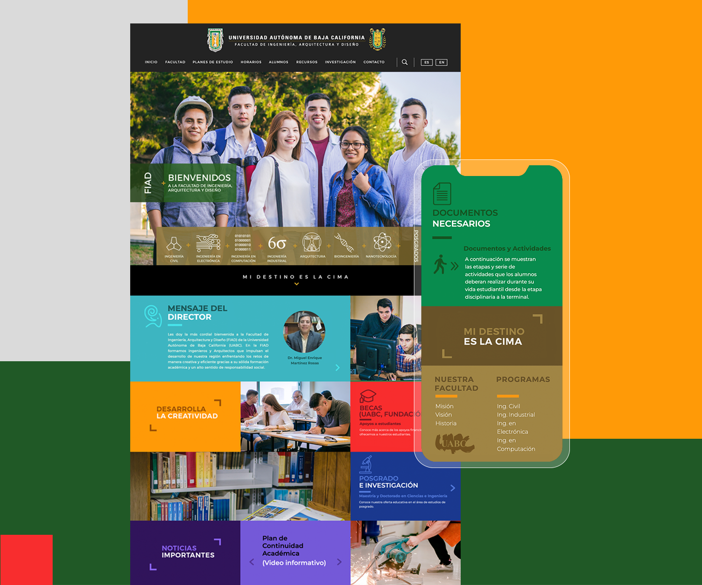
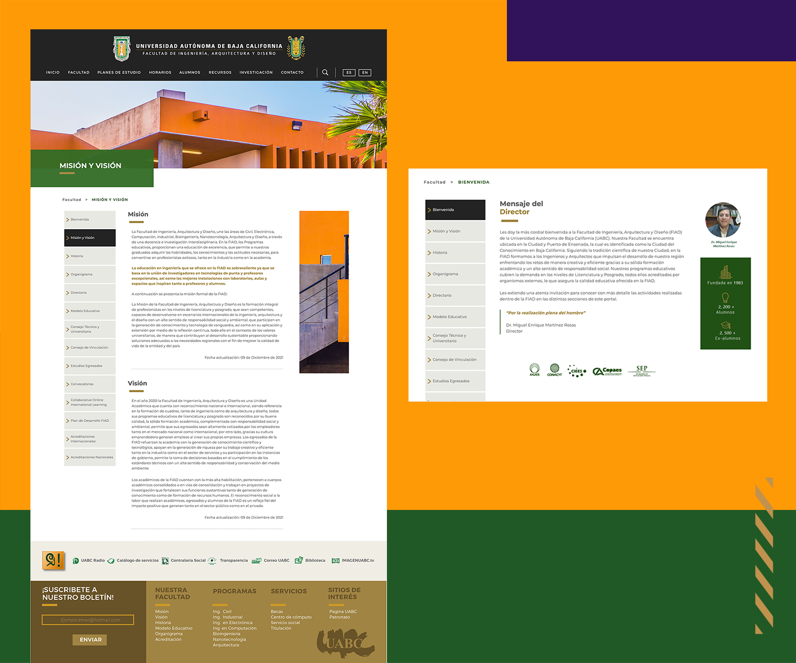
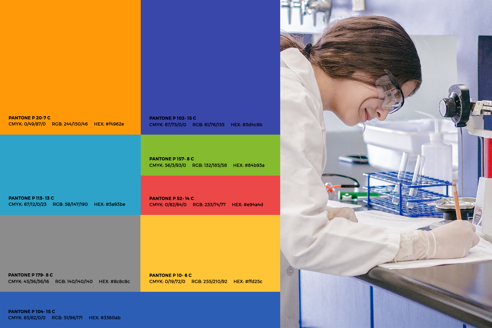
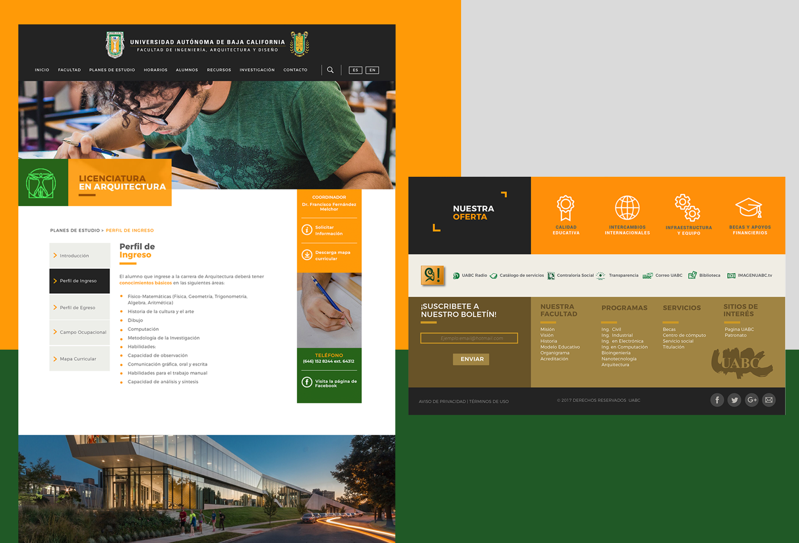
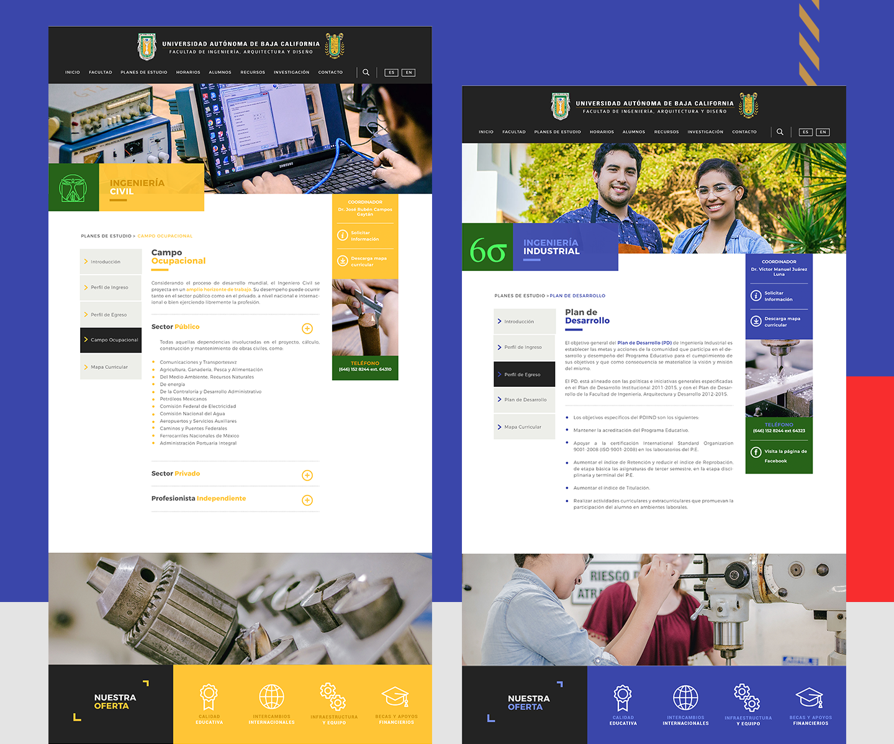
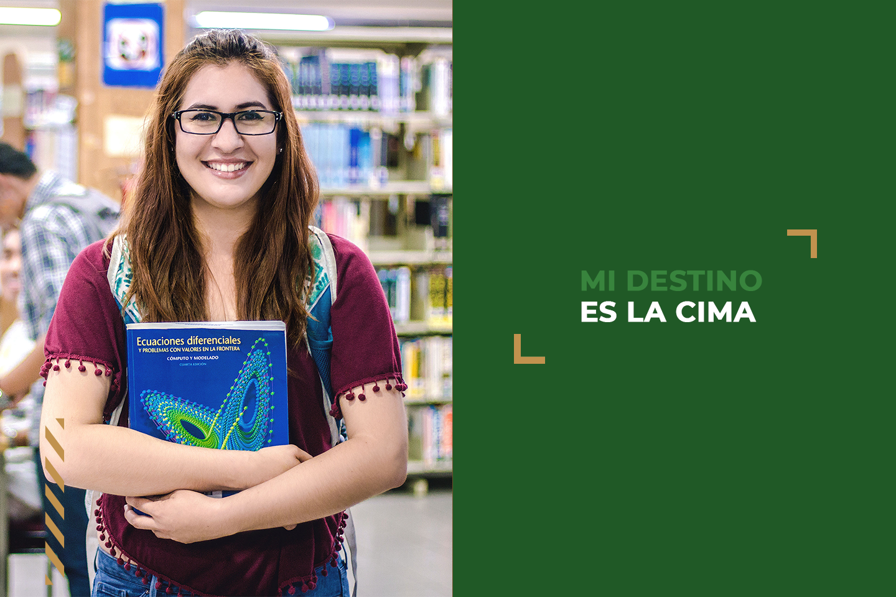
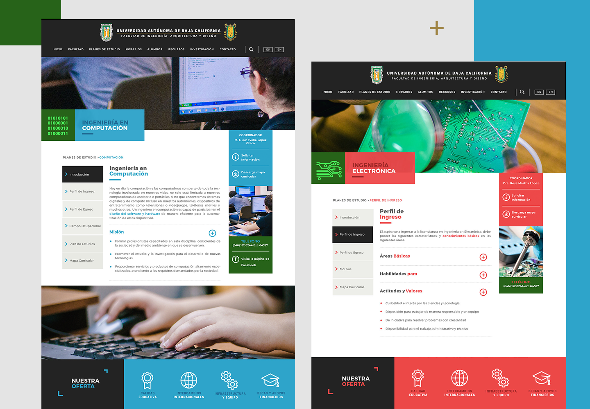
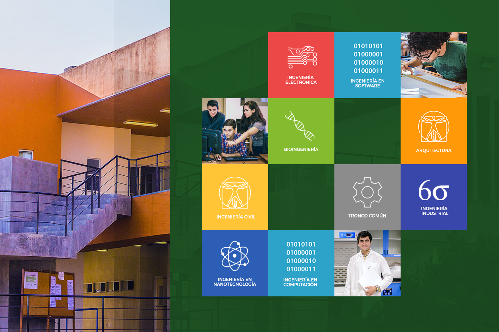
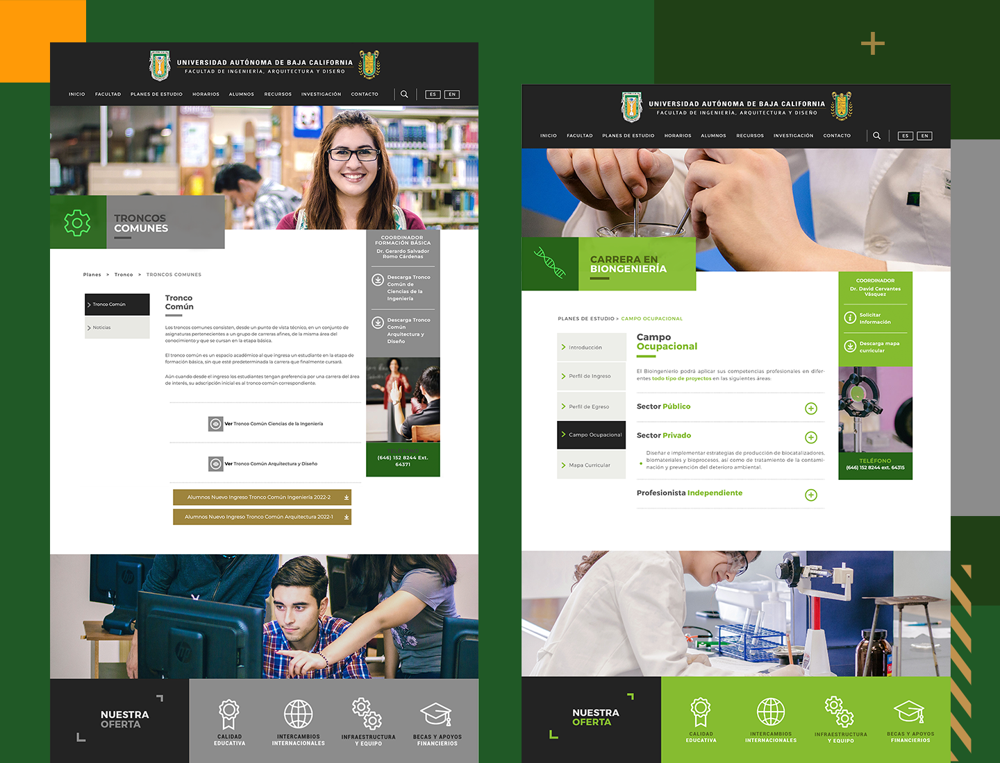
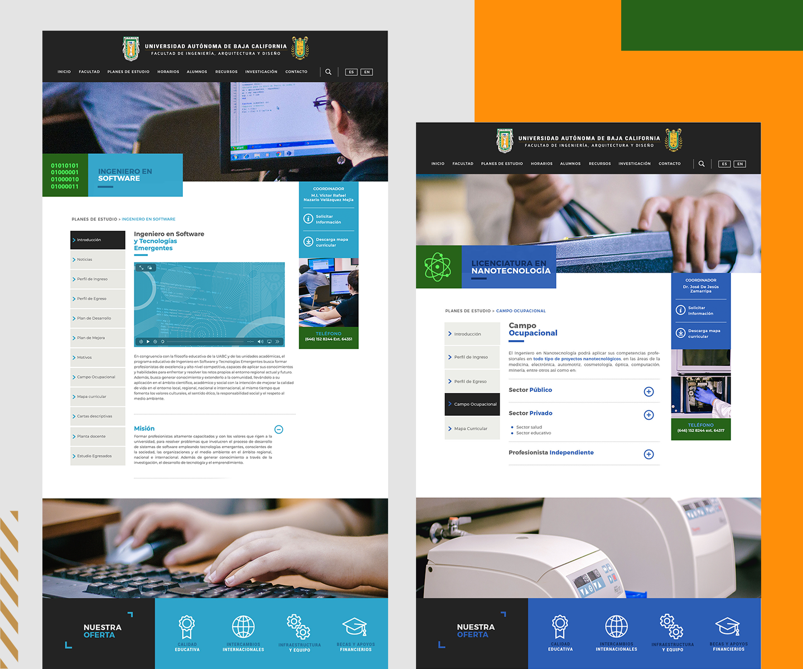

UABC FIAD
Engineering a High-Conversion Academic Experience
Information Architecture Design System UX Strategy Web Design
UABC FIAD leads engineering education in Northwestern Mexico. We transformed its fragmented digital portal into a modern, high-converting experience that aligns institutional prestige with effortless UX.
Product
UABC FIAD leads engineering education in Northwestern Mexico. I transformed its fragmented digital portal into a modern, high-converting experience that aligns institutional prestige with effortless UX.
Challenge
I inherited an outdated platform with high cognitive load and a buried brand identity. Prospective students struggled to find programs, hiding the institution's true academic value.
Solution
I engineered a modular system driven by color-coded program architecture and streamlined UX, transforming a complex portal into a high-converting digital showcase.
Role
Product Designer









